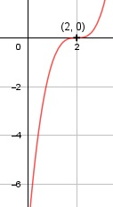

Aufgabe 26 f(x) = x3 - 6x2 + 12x - 8 f'(x) = 3x2 - 12x + 12, f''(x) = 6x - 12, f'''(x) = 6 Definitionsbereich: -∞ < x < ∞ Wertebereich: -∞ < f(x) < ∞ Asymptote: - Symmetrie: - Nullstellen: x3 - 6x2 + 12x - 8 = 0 Durch Probieren gefunden x = 2. Hornerschema: 1 -6 12 -8 x1 = 2 2 -8 8 ------------------------- 1 -4 4 0 Polynomdivision: x3 - 6x2 + 12x - 8 : (x - 2) = x2 - 4x + 4 -(x3 - 2x2) ------------ -4x2 + 12x - 8 -(-4x2 + 8x) ------------- 4x - 8 -(4x - 8) --------- 0 x2 - 4x + 4 = 0 p, q - Formel: p = -4, q = 4 x2,3 = x2,3 = 2 ± x2,3 = 2 ± x2,3 = 2 (Sattelpunkt) N1,2,3(2|0) Schnittpunkt mit der y-Achse: f(0) = 03 - 6 * 02 + 12 * 0 - 8 = - 8 Sy(0|-8) Extrempunkte: 3x2 - 12x + 12 = 0 |:3 x2 - 4x + 4 = 0 p, q - Formel: p = -4, q = 4 x1,2 = x1,2 = 2 ± x1,2 = 2 ± x1,2 = 2, f(2) = 0 f''(2) = 6 * 2 - 12 = 0 --> keine Extrempunkte Wendepunkte: 6x - 12 = 0 |+12 6x = 12 | :6 x = 2, f(2) = 0, f'''(2) ≠ 0 --> Wendepunkt (2|0) (Sattelpunkt) Graph:
